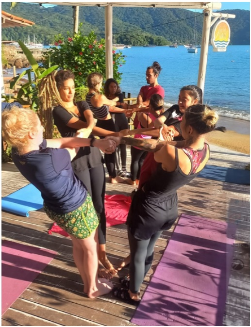

Experimentá la sabiduría del yoga, el dinamismo de la acrobacia y la relajación profunda del masaje tailandés, en un entorno cuidado, de escucha y confianza
- ¿Sentís que tu consciencia corporal podría mejorar?
- ¿Te gustaría comenzar el día haciendo algo para vos?
- ¿Necesitás ejercitar tu capacidad de comunicarte con les demás?
Sentirte desconectade de tu cuerpo puede causar desgano, falta de confianza en vos misme y dificultad para relacionarte con otras personas. Desarrollá tu conciencia corporal y disfrutá de la posibilidad de ser sostén y de ser sostenide, gracias a la práctica regular de acroyoga
Comenzá tu día con las energías recargadas al 100 % luego de una clase de acroyoga
- Desarrollá tus habilidades en todos los aspectos de la práctica, accediendo a un programa de clases regulares, sistematizadas y planificadas.
- Mejorá tus habilidades para la comunicación interpersonal, aprendiendo a comunicarte de manera no violenta con les otres.
- Sentí la conexión con la naturaleza, contemplando el mar y escuchando el sonido de las olas mientras «volás».
Nuestra Historia
Si hoy llegaste hasta acá es porque un aspecto de vos misme está latente, esperando a que lo encuentres, lo escuches y le permitas ser. La práctica del acroyoga te acompaña en ese proceso.
Somos Alo y Manu, una pareja de marides, viajeres y emprendedores muy manijas. Desde el año 2017 estamos viajando por Latinoamérica, compartiendo clases de acroyoga en centros culturales, hostels y en las playas. Desde que nos conocimos comenzamos a hacer acroyoga y a volar juntes, llevando todo el amor que sentimos por esta práctica a cada lugar al que llegamos.
El acroyoga es una disciplina que transformó la manera en la que nos relacionamos con nosotres mismes y con les otres.Nos presentó el desafío de confiar en les demás, soltar nuestros miedos y permitirnos volar junto, con y gracias a otres. Compartimos el acroyoga con el objetivo de sembrar la semilla de la comunidad en cada rincón del mundo, para que en el futuro todes podamos caminar a través de un bosque de respeto, compañerismo y empatía.
¿Te gustaría sumarte a esta comunidad?
La familia Acroyogui anda diciendo...

Mercedes Reppucci:
"Desde que comencé acroyoga, en lo físico, mejoré mi elongación, adquirí fuerza en los brazos y en los abdominales. Logré tomar conciencia de mi respiración y concentrarme en la postura de mi cuerpo. El mayor cambio que experimenté fue mental, ya que las clases me brindaron confianza en mis propias habilidades y en los otros como sostén, guía y acompañamiento."
Azul Villar:
"Este ejercicio me ayudó a conocer mejor mi cuerpo y sus respuestas frente a diferentes estímulos. Ahora puedo disfrutarme más, aprendí a sanarme y a quererme. Desde este lugar siento que puedo ser más empática con la consciencia corporal de les demás."
Preguntas Frecuentes
¿Te gustaría saber algo más antes de sumarte a volar con nosotres? Estas son algunas de las preguntas que más nos hacen antes de iniciar nuestras clases:
¿Necesito tener experiencia? Nunca hice yoga, ni me gustan los deportes en equipo
No necesitas experiencia previa para asistir a las clases de acroyoga. Existe un nivel de práctica adecuado para la fuerza, flexibilidad y las habilidades de cada persona. El desarrollo en la práctica es progresivo y respetuoso de los límites de cada une. En acroyoga decimos Reconozco mis límites, los respeto y los desafío de a poco
¿Necesito ir con alguien? Ni mi pareja ni mis amigues quieren acompañarme
No necesitas venir acompañade. En cada clase van a armar familias de 3 personas, diferentes cada vez, para practicar los juegos y vuelos. Tenés la posibilidad de desarrollar, afianzar y poner en práctica tus habilidades comunicativas y de socialización en cada oportunidad. Podes enfrentar y superar la timidez... ¡volando!
¿Necesito llevar algo?
Solo tenés que traer un mat de yoga (o una manta o alfombra), una botella de agua personal y ropa cómoda (que sea ajustada al cuerpo). No te pongas cremas en el cuerpo antes de venir a clase,para evitar resbalarte durante la práctica.
¿Necesito dejar a mi hije o perri al cuidado de alguien o puedo llevarlo a la clase?
Te recomendamos y solicitamos que vengas sole a las clases, para poder enfocarte en vos, en tu cuerpo y en tus compañeres durante la práctica. Es un momento para conectarte con vos misme y con les otres. Estar pendiente de otre, podría significar una distracción.
¿Querés dedicarte un tiempo exclusivo para vos, en el que puedas descubrir nuevas y mejores maneras de habitar tu cuerpo, tus vinculos y el mundo?
¿Querés desarrollar tu consciencia corporal, tu flexibilidad y tu fuerza junto a otres en una clase de acroyoga?
- Te esperamos todos los martes y jueves de 7 a 9 am. en el deck de Júlia SURTÒ.
- Valor de las clases
- Valor por clase: ARS 800
- Plan mensual - 1 clase por semana: ARS 3000
- Plan mensual - 2 clases por semana: ARS 5000
- El valor del plan mensual es válido abonado al inicio del periodo de clases.
Desarrolla tus potenciales físicas, emocionales y sociales en las clases regulares de acroyoga
Conocé nuestros Productos
Descubre nuestra selección de productos para acroyoga diseñados para mejorar tu práctica y hacerte sentir bien. Nuestra gama de productos está cuidadosamente seleccionada para ayudarte a encontrar el equilibrio y la armonía que necesitas. Explora nuestra selección y mejora tu experiencia de yoga hoy mismo.